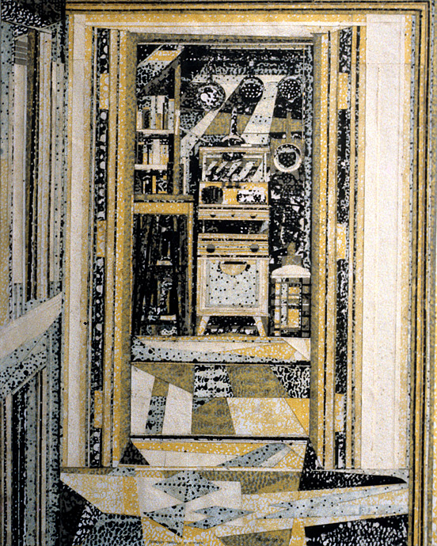
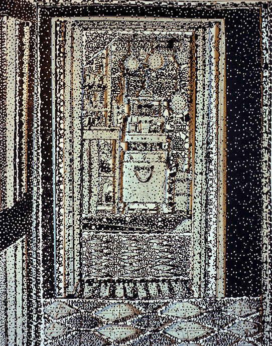
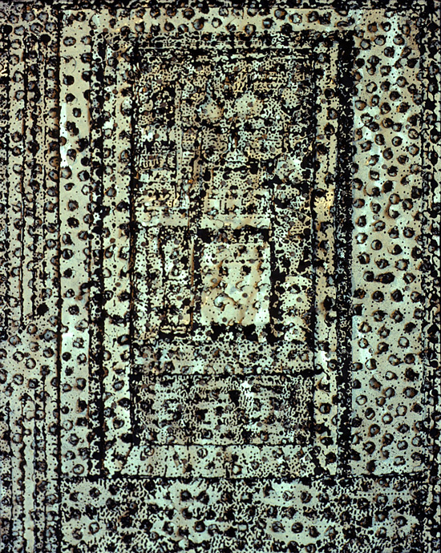
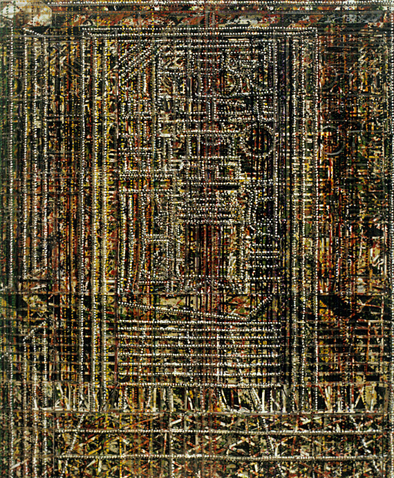
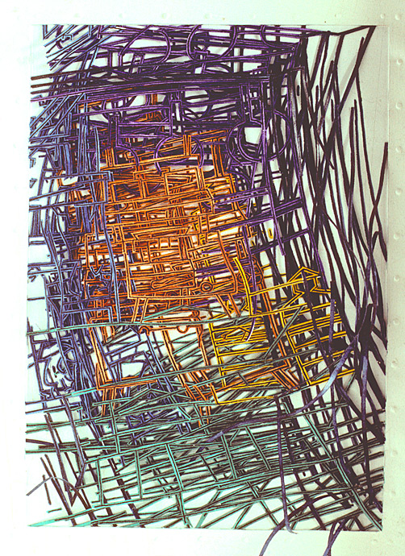
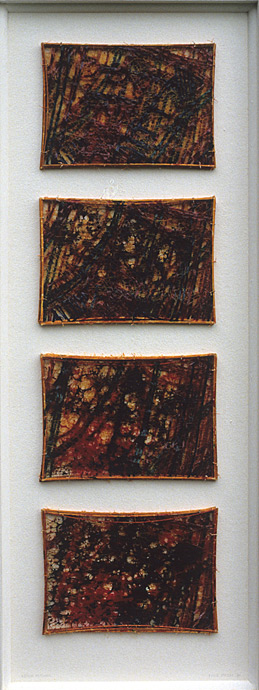

Thru to kitchen (1)
1981 51 x 40 cm collaged linocuts
1981 51 x 40 cm collaged linocuts

Thru to kitchen (2)
51 x 40 cm layered linocuts
51 x 40 cm layered linocuts

Thru to kitchen (3)
51 x 40 x 3 cm hanging cut linocuts
51 x 40 x 3 cm hanging cut linocuts

Thru to kitchen (4)
51 x 40 x 3 cm drilled, layered linocuts
51 x 40 x 3 cm drilled, layered linocuts

Thru to kitchen (5)
51 x 40 cm collaged linocuts and paint
51 x 40 cm collaged linocuts and paint

Xerox kitchen
1986-7 (1) 20 x 30 x 3 cm paper, ink
1986-7 (1) 20 x 30 x 3 cm paper, ink

Xerox kitchen (2)
1986-7 (2) 20 x 30 cm times 4 glues, inks, papers, balsa
1986-7 (2) 20 x 30 cm times 4 glues, inks, papers, balsa